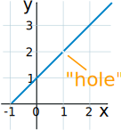
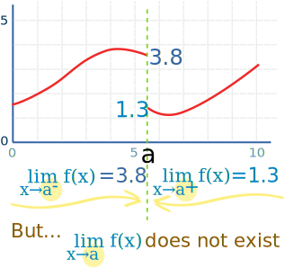

Limits (An Introduction)
Approaching ...
Sometimes we can't work something out directly ... but we can see what it should be as we get closer and closer!Example:
(x2 − 1) (x − 1)
Let's work it out for x=1:
(12 − 1) (1 − 1) = (1 − 1) (1 − 1) = 0 0
Now 0/0 is a difficulty! We don't really know the value of 0/0 (it is "indeterminate"), so we need another way of answering this.
So instead of trying to work it out for x=1 let's try approaching it closer and closer:
Example Continued:
| x | (x2 − 1) (x − 1) | |
| 0.5 | 1.50000 | |
| 0.9 | 1.90000 | |
| 0.99 | 1.99000 | |
| 0.999 | 1.99900 | |
| 0.9999 | 1.99990 | |
| 0.99999 | 1.99999 | |
| ... | ... |
Now we see that as x gets close to 1, then (x2−1) (x−1) gets close to 2
We are now faced with an interesting situation:
- When x=1 we don't know the answer (it is indeterminate)
- But we can see that it is going to be 2
We want to give the answer "2" but can't, so instead mathematicians say exactly what is going on by using the special word "limit".
The limit of (x2−1) (x−1) as x approaches 1 is 2
And it is written in symbols as:
limx→1x2−1x−1 = 2
So it is a special way of saying, "ignoring what happens when we get there, but as we get closer and closer the answer gets closer and closer to 2"
|
As a graph it looks like this: So, in truth, we cannot say what the value at x=1 is. But we can say that as we approach 1, the limit is 2. |
 |
Test Both Sides!
It is like running up a hill and then finding the path is magically "not there"...
... but if we only check one side, who knows what happens?
So we need to test it from both directions to be sure where it "should be"!
Example Continued
So, let's try from the other side:
| x | (x2 − 1) (x − 1) | |
| 1.5 | 2.50000 | |
| 1.1 | 2.10000 | |
| 1.01 | 2.01000 | |
| 1.001 | 2.00100 | |
| 1.0001 | 2.00010 | |
| 1.00001 | 2.00001 | |
| ... | ... |
Also heading for 2, so that's OK
When it is different from different sides

How about a function f(x) with a "break" in it like this:
The limit does not exist at "a"
We can't say what the value at "a" is, because there are two competing answers:
- 3.8 from the left, and
- 1.3 from the right
But we can use the special "−" or "+" signs (as shown) to define one sided limits:
- the left-hand limit (−) is 3.8
- the right-hand limit (+) is 1.3
And the ordinary limit "does not exist"
Are limits only for difficult functions?
Limits can be used even when we know the value when we get there! Nobody said they are only for difficult functions.
Example:
limx→10x2 = 5
We know perfectly well that 10/2 = 5, but limits can still be used (if we want!)
Approaching Infinity

Infinity is a very special idea. We know we can't reach it, but we can still try to work out the value of functions that have infinity in them.
Let's start with an interesting example.
| Question: What is the value of 1∞ ? |
| Answer: We don't know! |
Why Don't We Know?
The simplest reason is that Infinity is not a number, it is an idea.
So 1∞ is a bit like saying 1 beauty or 1 tall .
Maybe we could say that 1∞ = 0, ... but that is a problem too, because if we divide 1 into infinite pieces and they end up 0 each, what happened to the 1?
In fact 1∞ is known to be undefined.
But We Can Approach It!
So instead of trying to work it out for infinity (because we can't get a sensible answer), let's try larger and larger values of x:

| x | 1 x |
| 1 | 1.00000 |
| 2 | 0.50000 |
| 4 | 0.25000 |
| 10 | 0.10000 |
| 100 | 0.01000 |
| 1,000 | 0.00100 |
| 10,000 | 0.00010 |
Now we can see that as x gets larger, 1 x tends towards 0
We are now faced with an interesting situation:
- We can't say what happens when x gets to infinity
- But we can see that 1 x is going towards 0
We want to give the answer "0" but can't, so instead mathematicians say exactly what is going on by using the special word "limit".
The limit of 1 x as x approaches Infinity is 0
And write it like this:
limx→∞1x = 0
In other words:
As x approaches infinity, then 1 x approaches 0
When you see "limit", think "approaching"
It is a mathematical way of saying "we are not talking about when x=∞, but we know as x gets bigger, the answer gets closer and closer to 0".
Read more at Limits to Infinity.
Solving!
We have been a little lazy so far, and just said that a limit equals some value because it looked like it was going to.
That is not really good enough! Read more at Evaluating Limits.